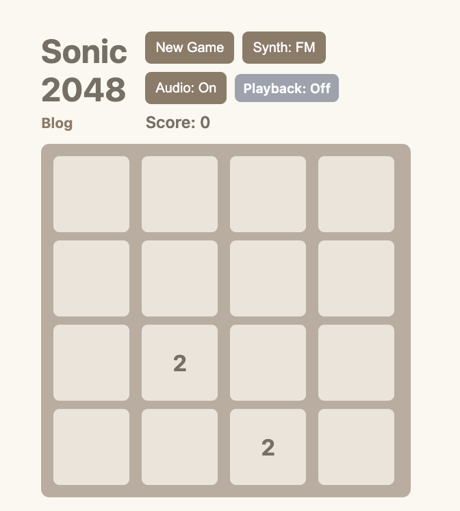

For our final project, we built Sonic 2048, an audio-driven version of the classic 2048 game. We designed this modified game so that each move contributes to an evolving generative composition. Every tile value is associated with a distinct tone, and every merge becomes a musical event that generates a new sound. As the board changes, the player is not only solving a puzzle but also shaping a piece of music through their decisions.
Our main design goal was to translate the logic of 2048 into a generative musical system. In the original game, two matching tiles merge into a higher value tile, but in our version of the game, that same action triggers the creation of a new sound that depends on the resulting tile value. Lower tiles produce simpler, more stable tones, while higher tiles introduce brighter and more harmonically complex textures. This allowed the musical complexity to evolve alongside the progression of the board, from 2 up to 2048.
const BASE_FREQUENCY = 220;
const SCALE_SEMITONES = [0, 2, 3, 5, 7, 9, 10, 12];
function valueToFreq(value, semitoneOffset = 0) {
const numeric = Math.max(2, Number(value) || 2);
const tileStep = Math.max(0, Math.log2(numeric / 2));
const octave = Math.floor(tileStep / SCALE_SEMITONES.length);
const semitone =
SCALE_SEMITONES[tileStep % SCALE_SEMITONES.length] +
octave * 12 +
semitoneOffset;
return BASE_FREQUENCY * Math.pow(2, semitone / 12);
}
This function shows the basic musical mapping. Because 2048 tile
values grow by powers of two, Math.log2 provides a step
index to move through the scale. The index is used to choose the
scale degrees and octave shifts, so the visual progression of the
board also becomes a pitch progression.
We implemented a custom synthesis system using the Web Audio API rather than relying on static audio samples. FM synthesis became a central part of our sound design because it provided a flexible way to scale timbre according to tile value. As tile values increase, modulation index and harmonic ratio can be adjusted to create higher or more unstable sounds.
function playFMSynth(freq, when = ctx.currentTime, duration = 0.6, note = {}) {
const modOsc = ctx.createOscillator();
const modGain = ctx.createGain();
const carrier = ctx.createOscillator();
const outGain = ctx.createGain();
const filter = ctx.createBiquadFilter();
modOsc.type = 'sine';
carrier.type = 'sine';
modOsc.frequency.value =
freq * (2.2 + note.harmonicLift * 0.2);
modGain.gain.value =
freq * (0.012 + note.brightness * 0.01);
modOsc.connect(modGain);
modGain.connect(carrier.frequency);
carrier.connect(filter);
filter.connect(outGain);
outGain.connect(masterGain);
}
In the code snippet, the modulator is connected to the carrier
oscillator's frequency AudioParam. That routing is what makes the
sound FM rather than just layered oscillators. The
brightness and harmonicLift values are
derived from gameplay, so stronger or more complex merges push the
resulting timbre toward a denser sound.
We also designed the audio system to be modular. Gain nodes handle dynamic volume control, while additional processing nodes shape the overall character of the sound. One feature we explored beyond the class material was the WaveShaperNode, which we used to add distortion and alter the texture of certain synthesis modes. A waveshaper takes an incoming audio signal and remaps its waveform using a custom curve. This gave us a way to make the game's sound palette feel less static and more expressive.
We used the note.distort condition to decide when a
sound should pass through the waveshaper. If a merge is large
enough, the signal is sent from the output gain node into the
WaveShaperNode, then into the master gain. If not, it
goes directly to the master gain. This keeps smaller tile sounds
clean while allowing larger merges to gain more edge and energy.
function createWaveShaper(amount = 12) {
const waveShaper = ctx.createWaveShaper();
waveShaper.curve = makeDistortionCurve(amount);
waveShaper.oversample = '4x';
return waveShaper;
}
if (note.distort) {
const ws = createWaveShaper(note.distortionAmount);
outGain.connect(ws);
ws.connect(masterGain);
} else {
outGain.connect(masterGain);
}Another important feature is the game-history playback system. At the end of a game, the player can listen back to a musical recap generated from their moves. In this playback, moves become notes, merges influence rhythm and amplitude, so the full sequence becomes a musical score. This transforms the game from a puzzle with sound effects into a system for composing through play.
const entry = {
moveDirection: direction,
tileValues: this.getFlat(),
mergedValue: mergedTotal,
mergeEvents,
maxTile: Math.max(...this.grid),
timestamp: Date.now()
};
gameHistory.push(entry);Each successful move is saved as a history object. This allows us to reconstruct the final game musically without saving raw audio. The playback system reconstructs the game as a generative score using move direction, merge values, and board state.
const spacing =
rhythmBase + Math.min(0.12, mergeCount * 0.018);
const duration =
Math.min(0.75, 0.16 + mergeWeight * 0.04);
const amplitude =
Math.min(0.19, 0.08 + mergeWeight * 0.012);
const brightness =
Math.min(1.1, 0.22 + mergeWeight * 0.11);
const freq =
valueToFreq(representativeValue, directionInterval);The mapping above turns a move history entry into performable musical parameters. Larger merges become louder and brighter, while movement direction changes pitch offset and rhythmic feel. The recap is not a recording of the game audio, but rather a second generative pass over the player's strategy.
We also included a sound board that lets players switch between different synthesis styles, such as FM and subtractive synthesis. This gives the player control over the instrument used to perform their game. The same sequence of moves can feel very different depending on the synthesis mode.
Sonic 2048 explores the relationship between interaction, computation, and sound. The project uses the original 2048 as a framework for generative music, where each player's strategy produces a unique sonic result. We enjoyed creating a program that allows us to showcase the content that we learned in class and throughout our projects and also new material that we wanted to include (WaveShaperNode).